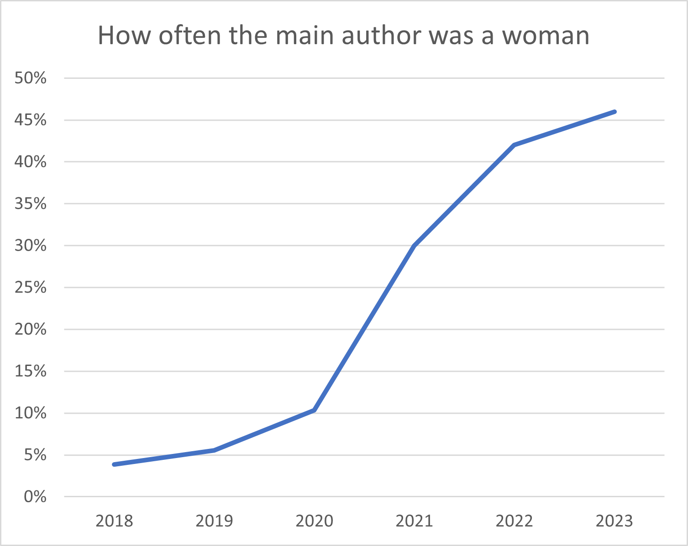
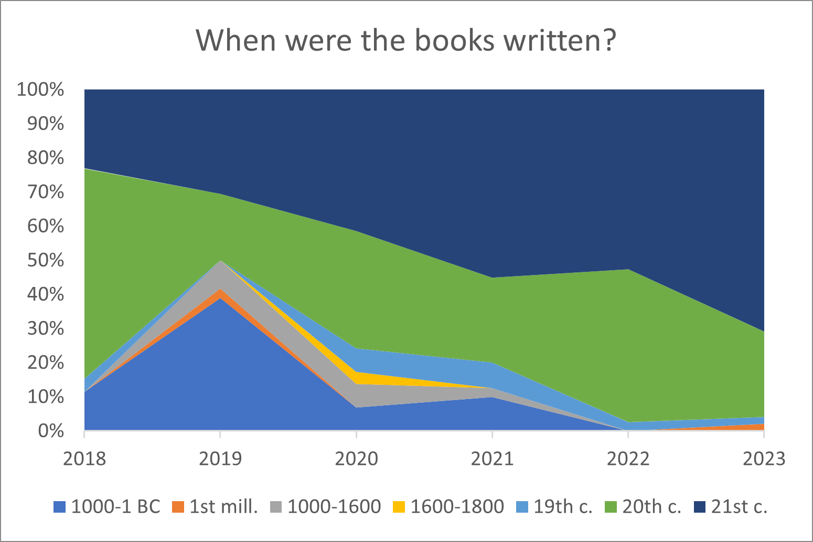
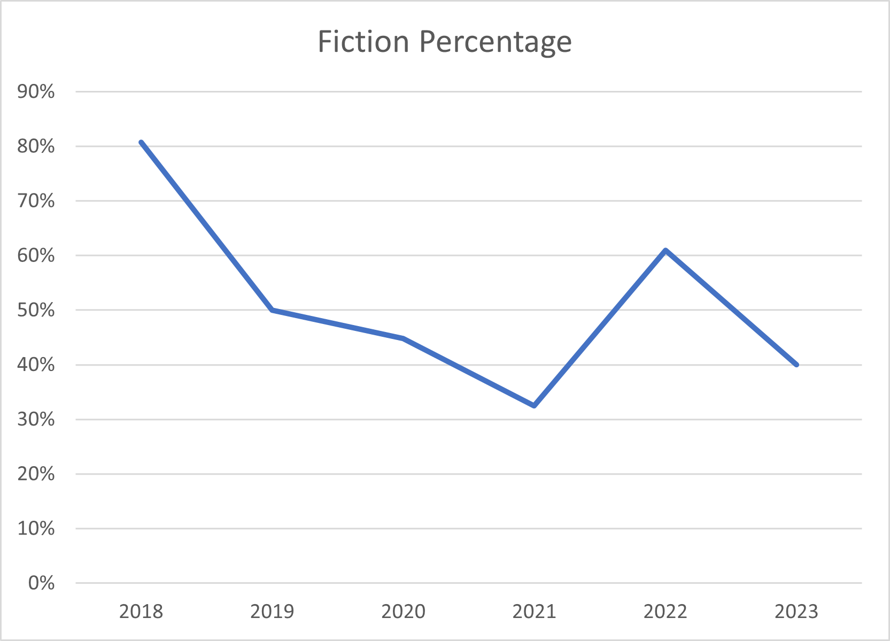
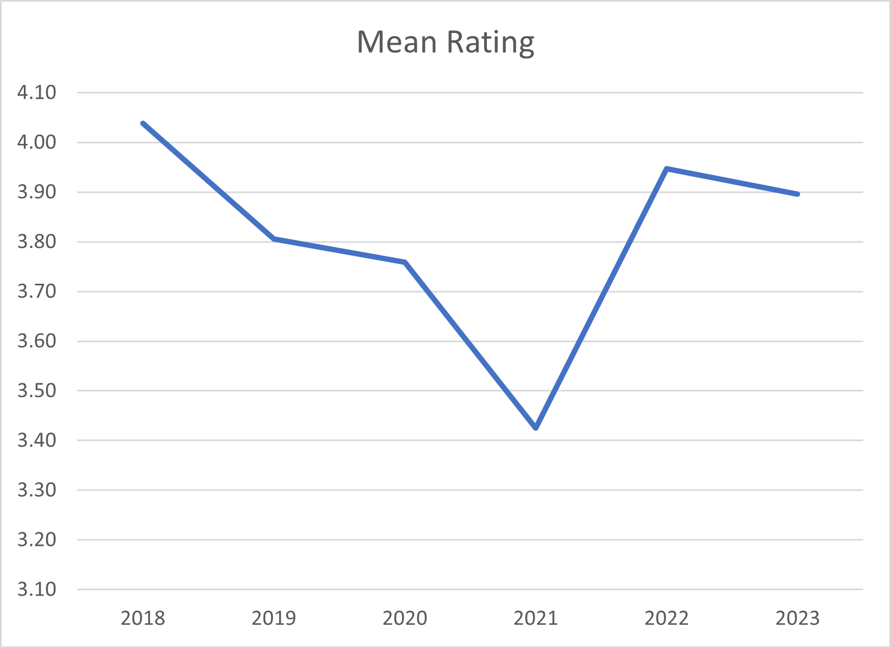
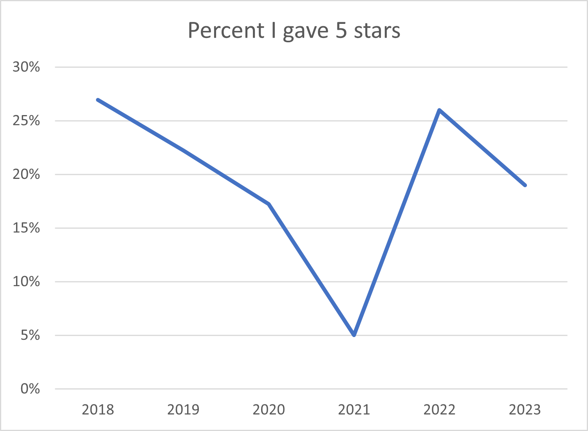
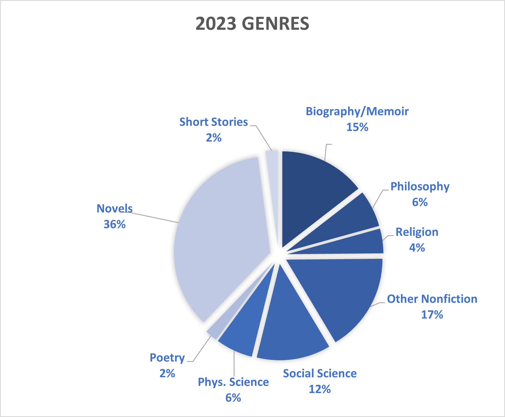

Books Analysis: 2023 Update
Some Background
Since 2018 I have kept track of the books I've read. Last year I analyzed what I had read through 2022 and this page updates that analysis with 2023 data.
I will mostly focus on the changes, but previous years are still up. 2021, 2022.
Last Year's Goals
In January 2023 I set several goals for my reading in the then-new year. Read 40 books (I didn't hit this in 2022), read women's books at 45% or greater level, read two books from each of seven time periods, and get through half of a list of 10 books that I've wanted to read for a while. Some of these I succeeded at and others were miserable failures.
Goal 1: Achieved! In fact, I read more books this year than in any since I started keeping track. This is after not reaching my goal last year. (Don't give these numbers too much weight as the length variance is large.)
| 2018 | 2019 | 2020 | 2021 | 2022 | 2023 | Total |
|---|---|---|---|---|---|---|
| 26 | 36 | 29 | 40 | 38 | 48 | 217 |
Goal 2: Another success! I started thinking about this about three years ago, and you can see the progress. It looks like a sigmoid curve to me, which is perhaps what one might expect when moving from one stable level to another. More data is needed.
Goal 3: Miserable failure. Only from the 20th and 21st centuries did I read at least 2 books. As you can see, recent books are more dominant in my reading than ever before. This goal is in conflict with goal 2, but I did have a list of old books I wanted to read, which I just failed to reference much. I'm disappointed with myself here, as I want to be the sort of person who reads lots of classic books.
Another statistic that has been creeping down as my 21st century book % has risen is the fiction %. I was intentionally trying to increase this in 2022, and it worked. When I stopped focusing on it in 2023, I shifted back to nonfiction once again. I'm not sure I care enough about this to work on it. In childhood I mostly read fiction and it is perhaps not suprising that this has changed as I age.
Goal 4: I only read 3/10 and the goal was 5/10. So a failure, but better than last year. The ones in bold have been read. I won't set a goal like this for 2024, as it has never worked well in the past.
1. Cry, the Beloved Country by Alan Paton
2. Tehanu by Ursula K. Le Guin
3. Feminist Theory: From Margin to Center by bell hooks
4. Idylls of the King by Tennyson
5. The Civil War as a Theological Crisis by Mark Noll
6. The Country of the Pointed Firs by Sarah Orne Jewett
7. Revelations of Divine Love by Julian of Norwich
8. Analects by Confucius
9. Middlemarch by George Eliot
10. Devotions upon Emergent Occasions by John Donne
Other Findings
Last year I noticed and commented on a stark decline in my mean star rating. Having that finding in my head evidently influenced my 2022 ratings. Rating may or may not be interesting going forward.
Same story as mean rating. This suggests I read a lot more books I loved in 2022 than in any year since 2018 and *checks list* that's plausible.
This year's fiction revival was heavily driven by novels. Nonfiction in general took a hit as I already mentioned, with physical science books completely disappearing. To see the genre breakdowns from previous years please consult last year's analysis. My favorite book this year was the first one I read--The Supper of the Lamb (1969) by Fr. Robert Farrar Capon. It's a wide-ranging exploration of everything near the intersection of food and theology.
2023 Goals
Even though I'm planning to get married and start medical school in 2023, I'm going to set a goal of 40 books again. I would like to cut down on my screen time and spending time reading books I want to read will help. I'd like to get the percentage of books written by women up to >45%. I'd like to read at least two books from each time period on the chart above.
Let's try something new with a list of books I want to read. Here's a list of ten books from my reading list. My goal is to read five in 2023.
1. Cry, the Beloved Country by Alan Paton
2. Tehanu by Ursula K. Le Guin
3. Feminist Theory: From Margin to Center by bell hooks
4. Idylls of the King by Tennyson
5. The Civil War as a Theological Crisis by Mark Noll
6. The Country of the Pointed Firs by Sarah Orne Jewett
7. Revelations of Divine Love by Julian of Norwich
8. Analects by Confucius
9. Middlemarch by George Eliot
10. Devotions upon Emergent Occasions by John Donne